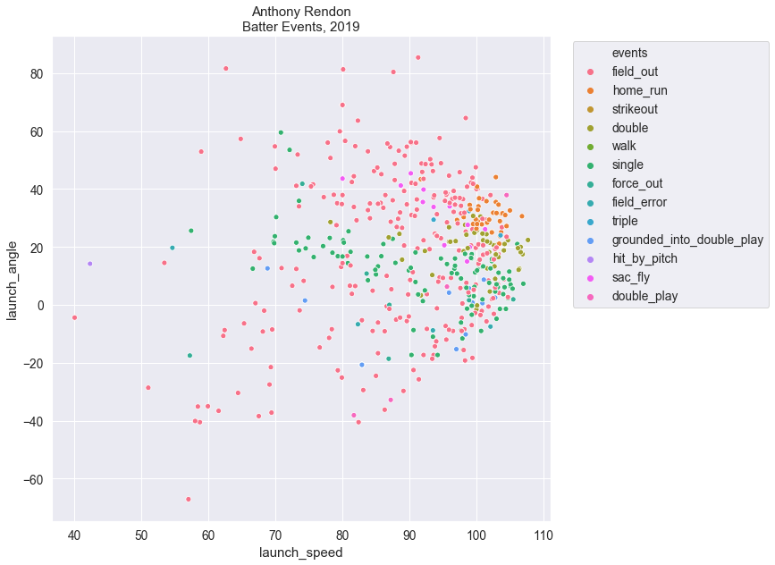

Background Info
Statcast: is an advance tool that combines doppler radar, and high definition video processing to measure the speed, acceleration, and other moving properties of objects in motion. Statcast is a result of the combined technology of TrackMan, and ChyronHego. Stacast is used in various sports, including Major League Baseball to track in-game biomechanics. In MLB, this is primarily for pitchers and hitters, although it captures all game related activities. The data collected has been used to evaluate player performances, and to help diagnose performance problems that may prevent injuries.
Why is this important?
Information gathering technology can provide a competitive edge in sports (and other industries).
Statcast in particular, can generate roughly seven terabytes of data, and this information
can provide insights that include aid in scouting top talent, and player development. These insights
can be powerful, but insights are unlocked from data by good analytics, and having a keen
understanding of the data, and the tools available to analyze it, are essential at driving value from
gathered data.
Resources
- Statcast
- Cole, Bryan (August 21, 2014). "Making sense of the video tracking systems". Beyond the Boxscore. Retrieved Nov 16, 2019.
- Trackman Baseball. Retrieved Nov 16, 2019.
- Day, Zach (December 5, 2019). "Measuring Pitching with TrackMan: The Secrets of Fastball Spin". Baseball prospectus. Retrieved Nov 16, 2019.
- Sheinin, Dave (June 1, 2017). "These days in baseball, every batter is trying to find an angle. Retrieved Nov 16, 2019
Taking it home. Using Statcast Data to find the optimal batting launch angle, and batting launch speed in barrel zone.
Efforts to identify home run optimal batting parameters has been active area of research for sport leagues, and engineering labs alike. The availability of data imposed a limit until the advent of technologies like Statcast, which provides a wide portfolio of baseball player biometrics, and batting event outcomes. This era of big data has made home run mechanics easier to decipher. When considering batting behaviors in particular, the batting launch angle, and launch speed have become key indicators of home run events. In fact, these findings have had an impact on the average MLB launch angle and launch speed, with players honing their own batting behaviors in search of the barrel zone. The objective of this post is to confirm these reports by analyzing the batting events for the top home run batters in the 2019 World Series Team. More specifically, this blog will address the following:
- Determine the 2019 top home run batters in the Washington Nationals and Houston Astros.
- Compare batter events between players.
- Determine which player had the longest hit distances.
- Determine if launch speed and launch angle have a bearing on home runs.
- Compare the launch speed and launch angle between players.
- Determine the impact of pitch velocity on home runs events.
- Determine the player's home run zone.
{kind=link}
Figure 1. Statcast apparatus. Image retrieved 11-26-19 from live-production.tv
Methods
Identifying top home run batters in 2019 World Series Teams
The top home run batters for the 2019 World Series teams was identified by analyzing the team statistics
for each team. The team statistics was obtained from the website Baseball-reference. Since the data was unavailable in a
downloadable format, the python libraries requests, lxml.html, and pandas were used to harvest this data
from each team webpage. The code used to gather this data can be downloaded in this jupyter notebook Jupyter Notebook: Web scraping MLB Team Statistic Data. The 2019 World Series
teams were the Washington Nationals
(WSN), and the Houston Astros
(HOU). To identify the top home run batters, the data was analyzed using the python libraries
pandas, numpy, matplotlib, and seaborn. The code used to analyze this data can be downloaded in this
jupyter notebook Jupyter Notebook: Top Home Run Batters in the 2019 World Series Teams.
Gathering Statcast Data for the top Home Run Batters in the Astros and Nationals
The 2019 Statcast data for each player was retrieved from Baseballsavant.mlb.com. Although this website enables users to query their database, it does not provide options to download the results of an advance search. To this end, a python script developed by Alan R Kessler. was used to capture data from advance StatCast searches, and save it into a sqlite database. The python libraries sqlite3 and pandas was then used to query and save the data into csv files. Since Statcast uses integer IDs to store player identities, the name corresponding to each player ID was determined by inspecting the player Statcast page, and searching through the
section id="player" tag. This ID number
was then used to filter for these players in the Statcast 2019 season database. The code used to analyze
this data can be downloaded in this jupyter notebook Jupyter Notebook:
Use Python to Harvest Statcast Data.
Analysis
Python was used in this project. Data was loaded and manipulated using the pandas library. The matplotlib and seaborn libraries were used to visualize data. The scipy, scikit_posthocs, and sklearn libraries were used in the statistical analysis. The Shapiro-Wilk test was used to test for normality, while the Barlette's test was used to test for equal variance. An ANOVA and Tukey's post hoc test was used to test for differences between players, and a logistic regression analysis was used to determine if launch speed and launch angle are predictors of home run events. A Pearson Correlation and Spearman R test was conducted where appropriate. Detailed methods can be found in the jupyter notebook. Jupyter Notebook: Top HR player analysis.
Results
Alex Bregman (Astros), Anthony Rendon, and Juan Soto (Nationals) were the top home run batters during the regular season
2019 Season team data harvested from www.baseball-reference.com confirmed that during the regular season, Alex Bregman was the top home run (hr) batter, leading the Astros with
41. Meanwhile, for the Washington Nationals, Anthony Rendon, and Juan Soto were the top home run batters, both with 34 home runs (Figure 2, 3).

Figure 2. 2019 Regular Season top home run batters for World Series Teams
{kind=link}
Figure 3. The 2019 regular season home run totals for the World Series teams, by players. Houston Astros (left panel) and Washington Nationals (right panel).
When taking the playoffs and the world series into account, Alex Bregman maintained his home run lead (49 hr), while Juan Soto (38 hr) outscored Anthony Rendon (37 hr) by 2 home runs. (Figure 4)
{kind=link}
Figure 4. Final home run totals for the top home run batters in the 2019 World Series.
Bregman and Soto have higher walks events than Rendon, but Rendon has more singles, and double.
There were seventeen possible batting outcomes. These outcomes range from field outs (the most common events), to fielders choice (Figure 5). The top six events, by count, were field outs, strikeouts, walks,
singles, doubles, and then home runs.
Although this order is used to cluster player batting events, the individual rankings vary, with Bregman batting the following events: 1) Field outs, 2) walks, 3) strikeouts, 4) singles, 5) home runs, 6) doubles.
Rendon: 1) Field outs, 2) singles, 3) strikeouts, 4) walks, 5) doubles, 6) home runs.
Soto: 1) Field outs, 2) strikeouts, 3) walks, 4) singles, 5) home runs, 6) doubles.
The total batted events by player were 765 for Bregman, 711 for Rendon, and 730 for Soto. Interestingly, Soto had 50 more strikeouts than both players, but not only managed to out score Rendon in HRs, but also had a higher HR rate (data in jupyter notebook).

Figure 5. Plate appearance outcomes for Alex Bregman (blue), Anthony Rendon (orange), and Soto (green).
Statcast also tracks hit distance, and of the three players, Soto had the highest mean distance (404 ft), followed by Rendon (395 ft), and Bregman (381 ft).
Table 1. Summary statistics for home run distances by players.
{kind=link}
{kind=link}
Figure 4. Distribution of home run travel distances by players.
{kind=link}
Figure 5. Players home run distributions through a density estimation plot.
context goes here

Figure 6. Alex Bregman's batting event outcomes by launch angle, and launch speed.
{kind=link}
Figure 7. Anthony Rendon's batting event outcomes by launch angle, and launch speed.

Figure 8. Juan Soto's batting event outcomes by launch angle, and launch speed.
Table 2. Summary statistics for player's home run launch angles, and launch speeds.

{kind=link}
Figure 9. Relationship between player's home run launch angle, and launch speed.
{kind=link}
Figure 10. Receiver operating curve for logistic regression model.
Table 3. Summary statistics for the pitch velocity "release_speed" associated with all home runs.

{kind=link}
Figure 11. Distribution of home run pitch velocities by batters.

Figure 12. Alex Bregman's batting home run zone.

Figure 13. Anthony Rendon's batting home run zone.
{kind=link}
Figure 13. Juan Soto's batting home run zone.